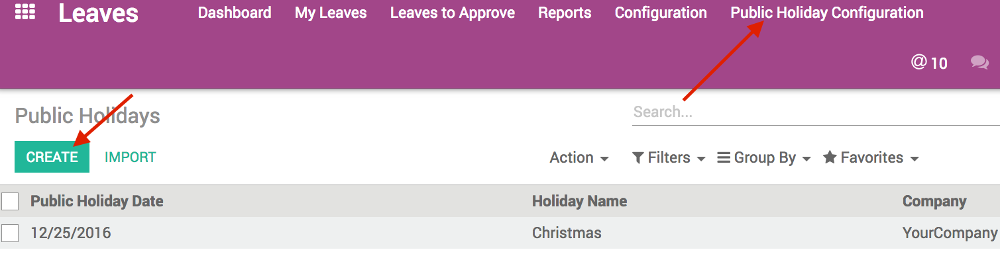

Leave - Exclude week-ends from holidays
Weekends and public holidays automatically excluded from leave days
Gives the possibility to exclude weekends and public holidays from leave days
Exclude Special Days from the leave
You can also configure Special days (e.g: New year, Christmas, etc...) enabling you to ignore them in the Leave days.

User guide
How to create a new Public Holiday?

- Go to Leaves > Configuration > Public Holidays.
- Click on create and fill in the form.
How to automatically remove the weekends from leave entries?
- Go to Leaves > Configuration > Settings > Leave days calculation.
- Check the boxes required.